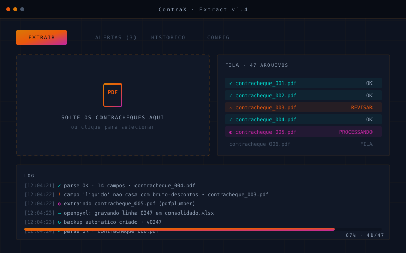

Setor de RH com volume mensal pesado de contracheques em PDF — cada um com um layout ligeiramente diferente. A consolidação era feita à mão, em Excel, levando horas e gerando erros que só apareciam meses depois.
Aplicativo desktop em Tkinter com fluxo simples:
arrasta os PDFs, clica em extrair, recebe um Excel
estruturado. Aba separada para alertas — qualquer
inconsistência (bruto ≠ líquido + descontos, campos
faltando, layouts não reconhecidos) vai para revisão
manual antes da exportação.
# core.py — extrator com fallback def extract(pdf_path: Path) -> Record: with pdfplumber.open(pdf_path) as doc: text = "\n".join(p.extract_text() for p in doc.pages) layout = detect_layout(text) # 1 de 4 templates fields = LAYOUTS[layout].parse(text) validate(fields) # raise se nao bate return Record(**fields, source_hash=sha256(pdf_path))
Cada template de contracheque é uma classe com método
parse(text) -> dict. Adicionar um novo é
uma classe nova, sem tocar no resto do código.
O openpyxl escreve em template fixo com headers
preservados, validação por coluna e formatação condicional
já embutida. Importável direto no sistema do cliente.
O ganho real não foi só de tempo: foi a confiança no número chegando ao destino — auditável, rastreável até o PDF de origem.